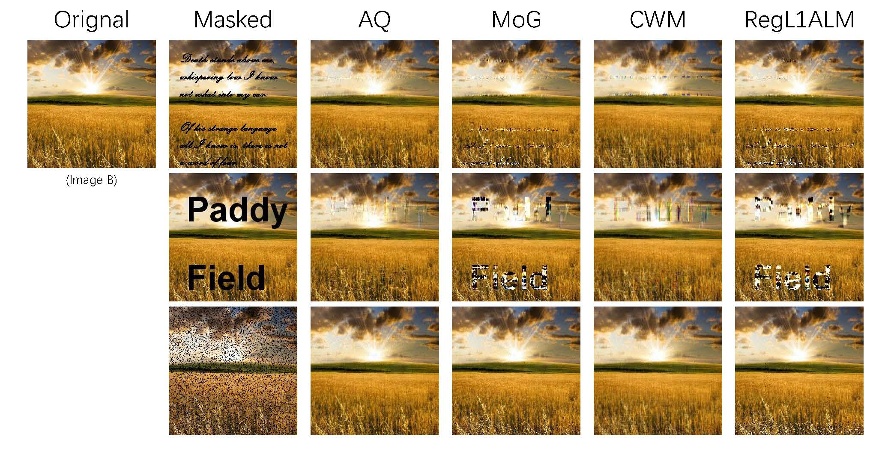
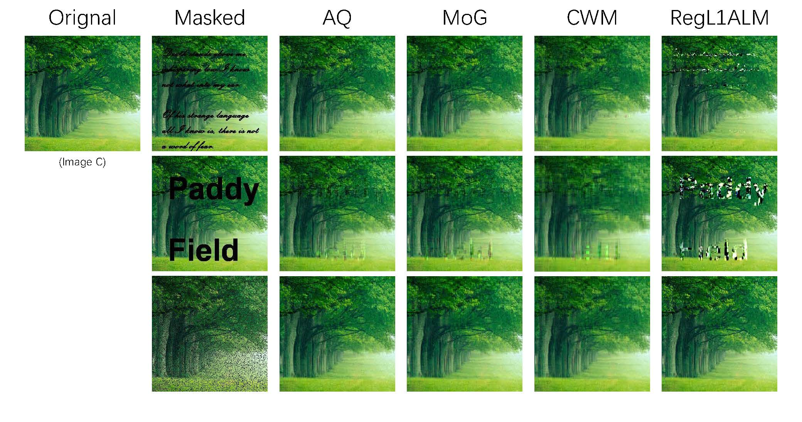
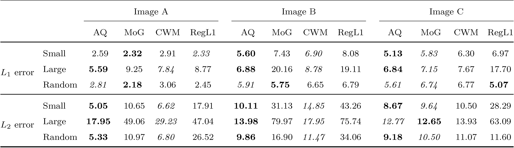
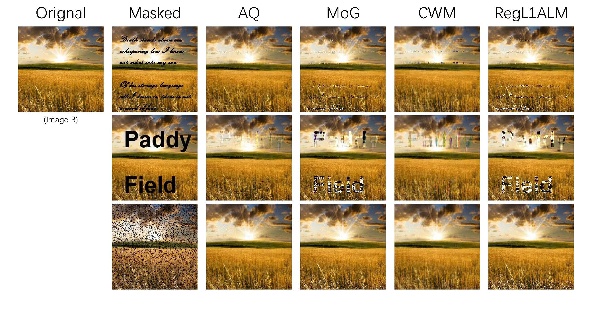
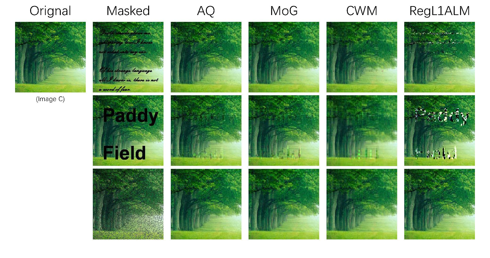
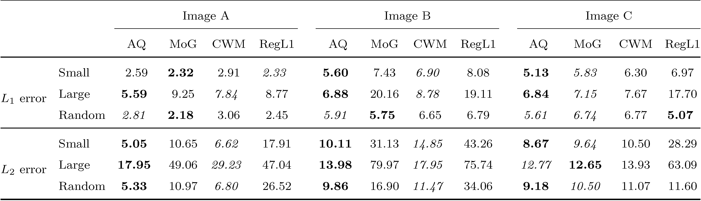

Adaptive Quantile Low-Rank Matrix Factorization
arXiv
Low-rank matrix factorization (LRMF) has received much popularity owing to its
successful applications in both computer vision and data mining. By assuming noise to come from
a Gaussian, Laplace or mixture of Gaussian distributions, significant efforts have been made on
optimizing the (weighted) \(L_1\) or \(L_2\)-norm loss between an observed matrix and its bilinear
factorization. However, the type of noise distribution is generally unknown in real applications
and inappropriate assumptions will inevitably deteriorate the behavior of LRMF. On the other
hand, real data are often corrupted by skew rather than symmetric noise. To tackle this problem,
this paper presents a novel LRMF model called AQ-LRMF by modeling noise with a mixture of
asymmetric Laplace distributions. An efficient algorithm based on the expectation-maximization (EM)
algorithm is also offered to estimate the parameters involved in AQ-LRMF. The AQ-LRMF model
possesses the advantage that it can approximate noise well no matter whether the real noise
is symmetric or skew. The core idea of AQ-LRMF lies in solving a weighted \(L_1\) problem with weights
being learned from data. The experiments conducted on synthetic and real datasets show that
AQ-LRMF outperforms several state-of-the-art techniques. Furthermore, AQ-LRMF also has the
superiority over the other algorithms in terms.
 




